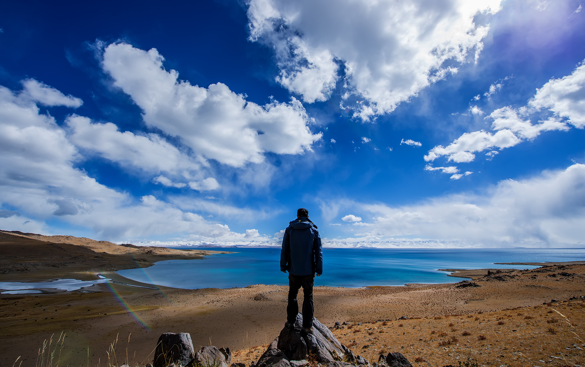
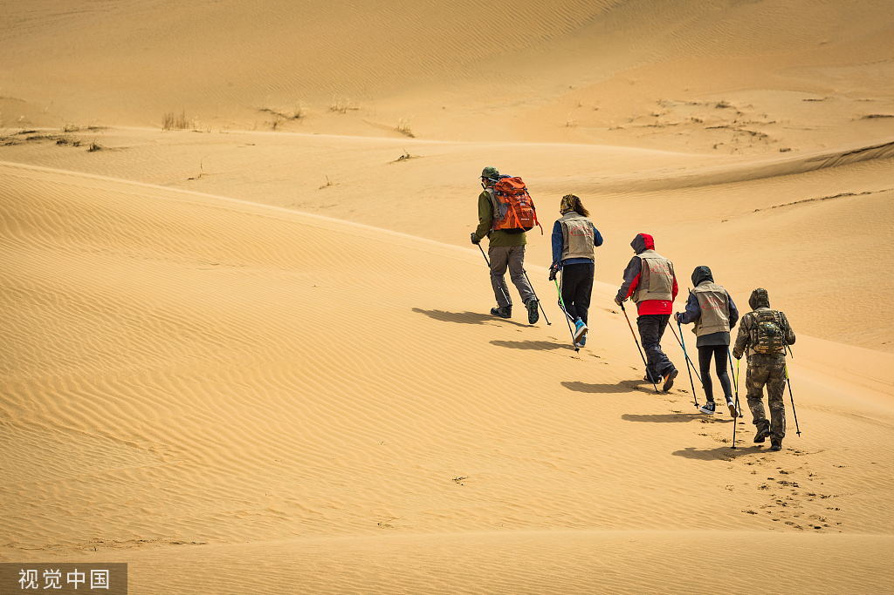

旅行的美妙之处

旅行是一种令人愉快且充满探索精神的活动。它不仅可以带给我们放松和享受的机会，还能拓宽我们的视野、增进对世界的了解。下面是一些旅行的美妙之处：
- 体验新文化：旅行可以带我们走到不同的国家和地区，让我们亲身体验各种文化的独特之处，包括风俗习惯、美食和艺术。
- 拓宽眼界：旅行可以让我们看到不同的风景和建筑，发现世界上的奇迹和美景，从而让我们对大自然和人类的创造力有更深刻的认识。
- 结交新朋友：旅行时，我们有机会结交来自世界各地的人。通过交流和互动，我们可以学习不同国家的价值观和生活方式，打破文化隔阂。
- 挑战自我：旅行是一个充满冒险和挑战的过程。我们可以尝试不同的活动和运动，克服困难，发展勇气和信心。
"旅行不仅仅是到达目的地的过程，更是一段感悟人生的旅程。"

无论是在国内还是国外，旅行都能给我们带来许多美好的回忆和学习经验。它可以激励我们勇敢面对未知，发现自己内在的力量，并让我们与世界更加紧密地联系在一起。
旅行的技巧和建议
除了享受旅行的美妙之处，以下是一些旅行的技巧和建议，帮助您更好地计划和享受旅程：
- 提前计划：在旅行前，制定一个详细的行程计划，并确保预订好机票、酒店和必要的交通工具。
- 了解目的地：在旅行之前，对目的地进行一些研究，了解当地的风俗习惯、交通方式和安全情况。
- 合理安排时间：确保给每个景点和活动留出足够的时间，同时也要留出一些自由时间，以便放松和探索。
- 尝试当地美食：品尝当地美食是旅行的一大乐趣，尽量尝试各种当地特色菜肴和小吃。
- 与当地人互动：与当地居民交流和互动可以让您更深入地了解当地文化和生活方式。
- 保持安全：在旅行期间要注意个人安全，保管好贵重物品，并遵守当地的法律和规定。
通过合理的计划和准备，您可以更好地享受旅行的乐趣，并创造出独特而珍贵的回忆。祝您旅途愉快！